Newborn
Es un tipo de retrato artística que capta en detalle las imágenes de tu bebé en sus primeros días, sus gestos, su piel, su conexión con los seres amados.
Es la posibilidad de congelar esa breve etapa en forma de fotografía profesional.
¿Cuándo realizar la sesión?
Lo ideal es durante los primeros 20 días de vida, durante este lapso tiene períodos de sueño profundo ideal para adoptar las poses que enamoran pues simulan las que tenían dentro del vientre materno.
Estos primeros días y sus características cambian muy rápido. Si tu bebé tiene más de 25 días se realiza la sesión adaptada con otras poses y otros tiempos.
 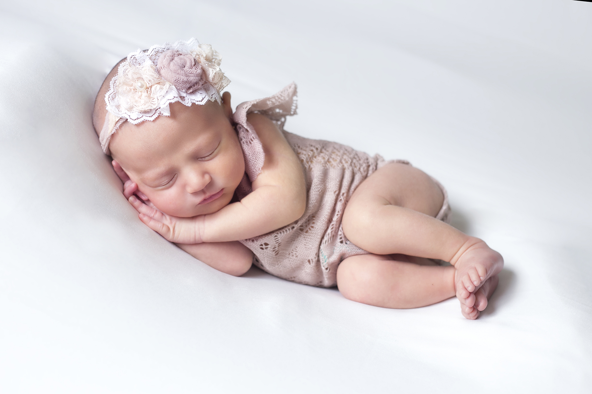
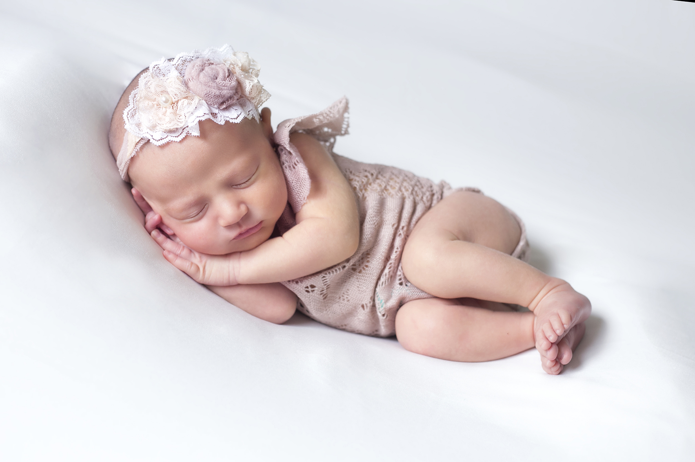
¿Cuándo reservar?
Se reservan con el mayor tiempo de anticipación posible, con tu fecha probable de parto, así tenemos tiempos para modificarla según su nacimiento.
Si tu bebé ya nació, escribime a la brevedad y le buscamos una fecha!
¿Dónde se realiza la sesión?
En nuestro estudio ubicado en el barrio Monte Castro, Floresta CABA.
Contamos con las condiciones de higiene y temperatura necesarias para recibir a los pequeños. El estudio se usa sólo una vez por día para cumplir con los protocolos y las normas de ventilación y aseo.
 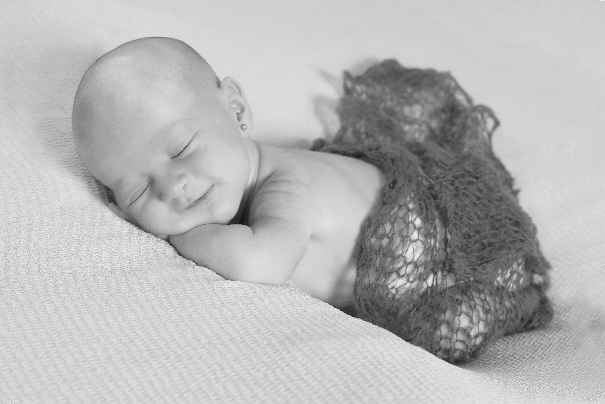
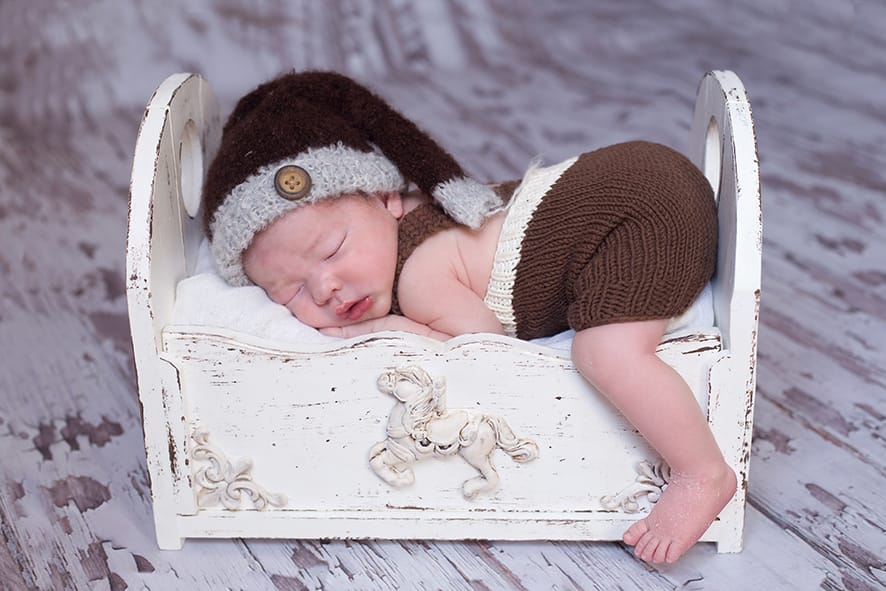
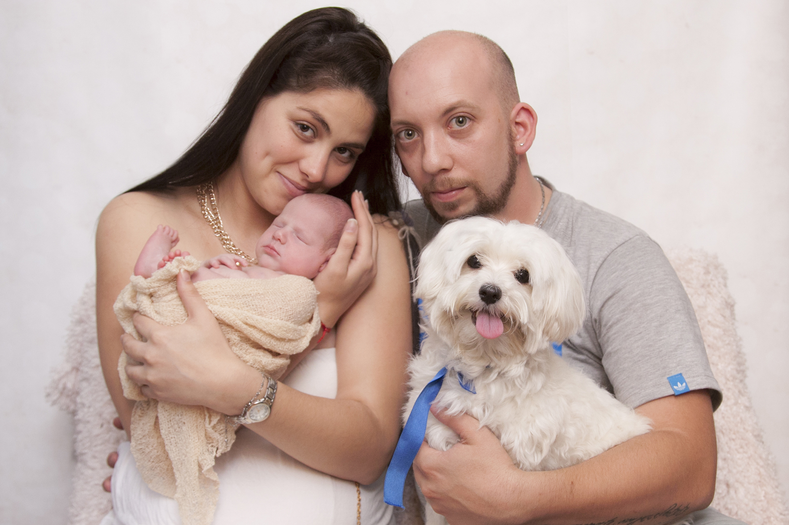
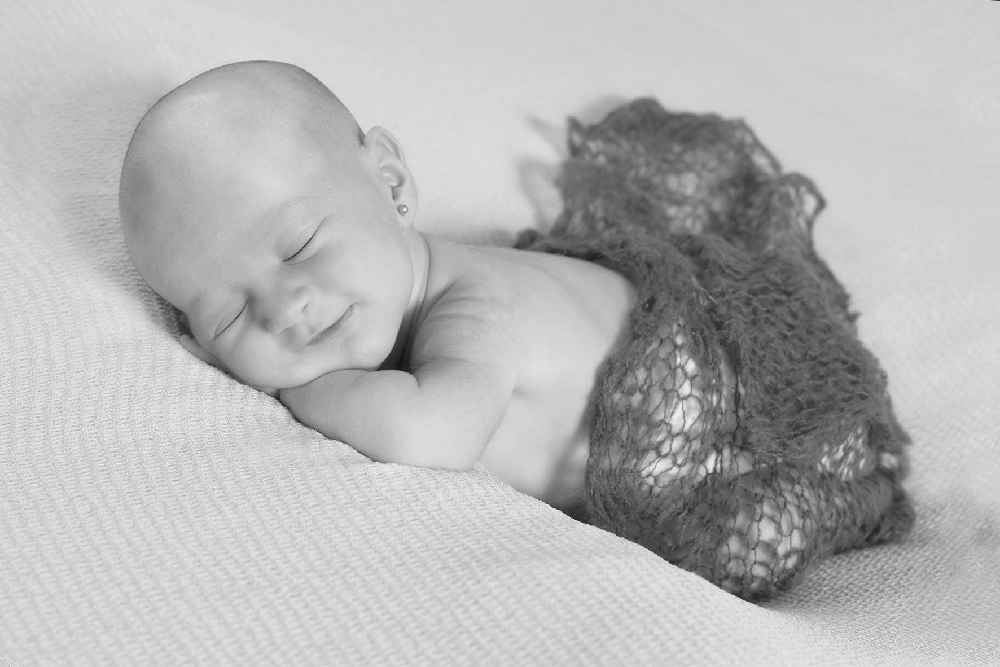
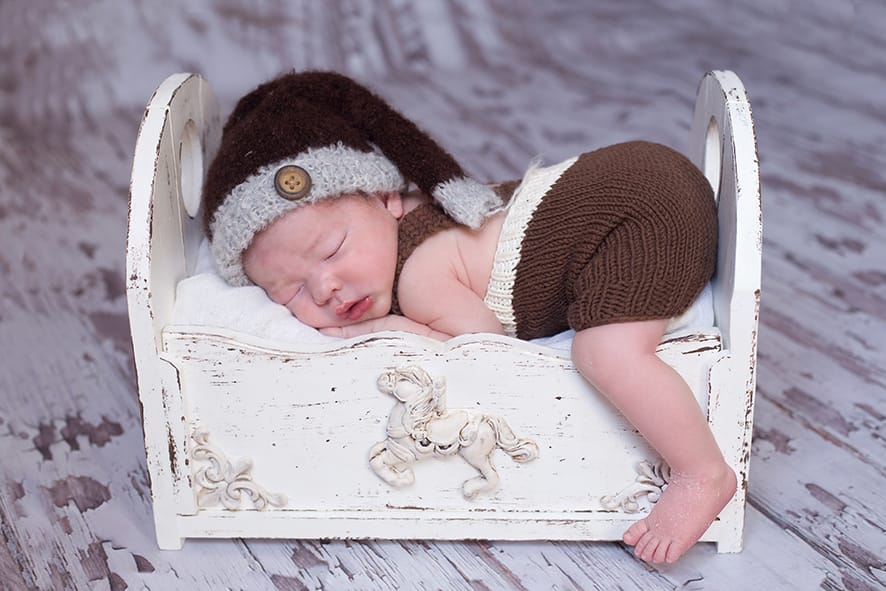
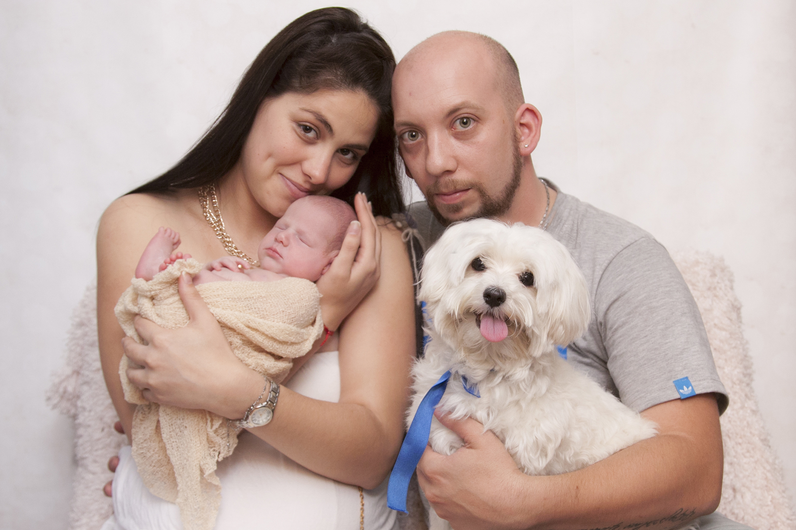


 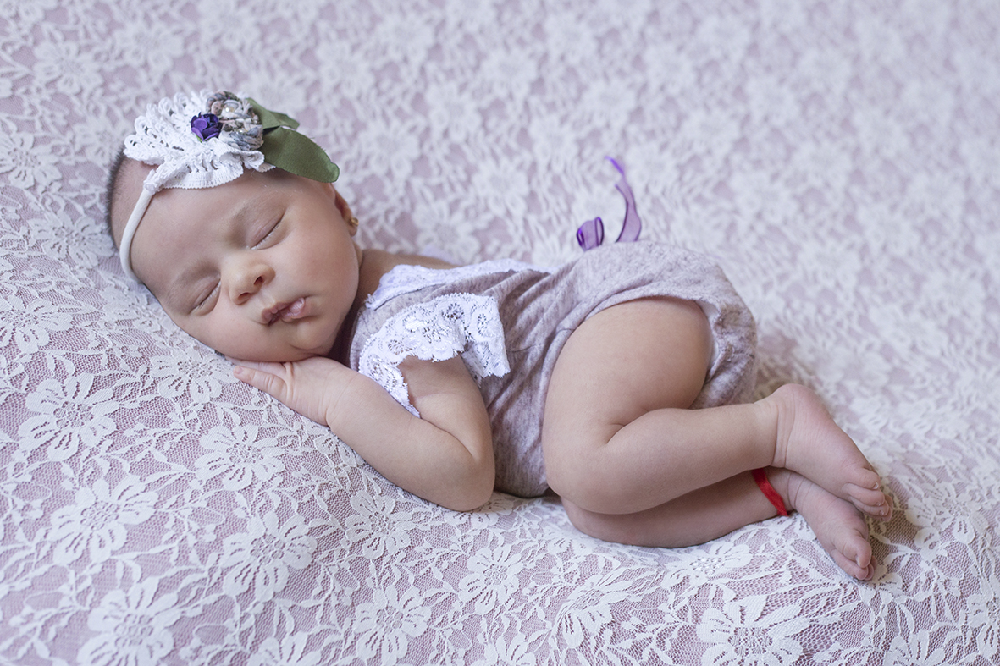
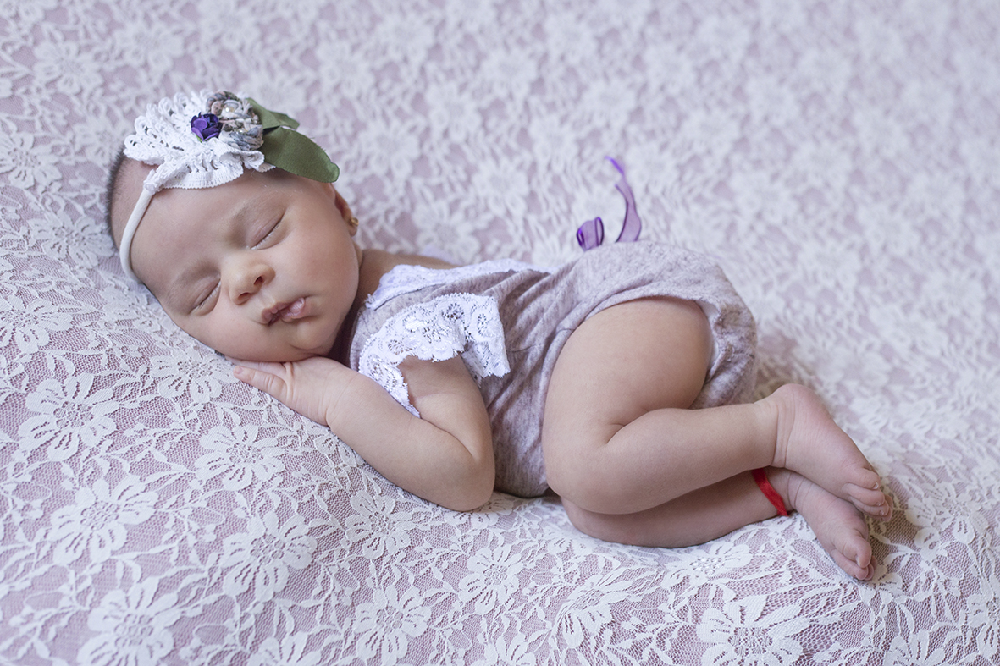
 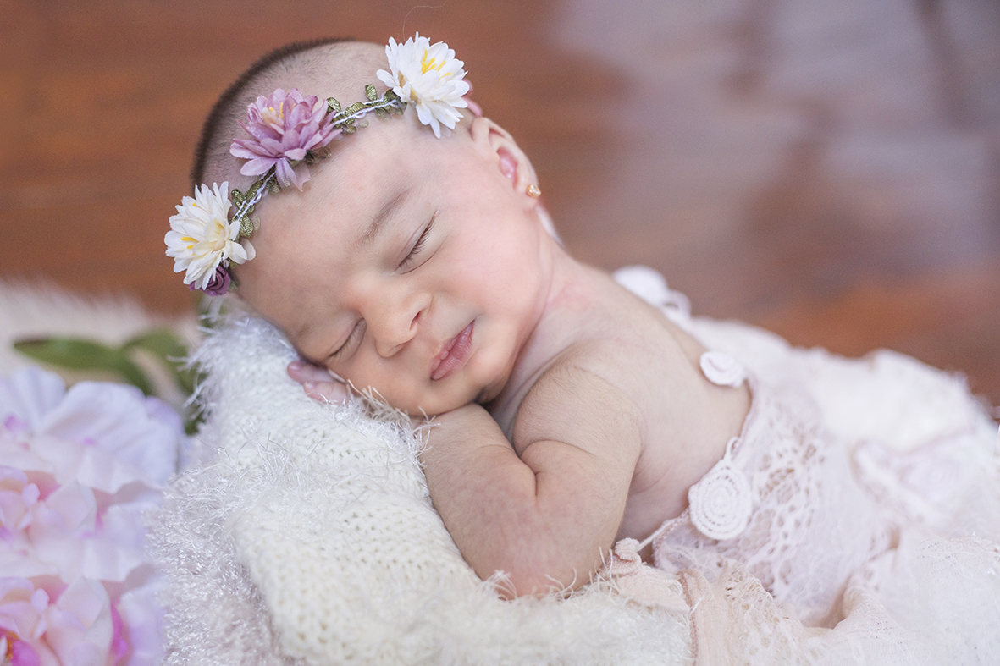
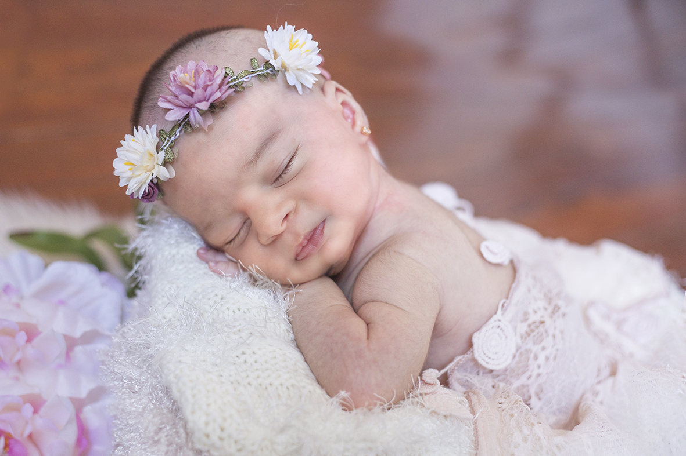